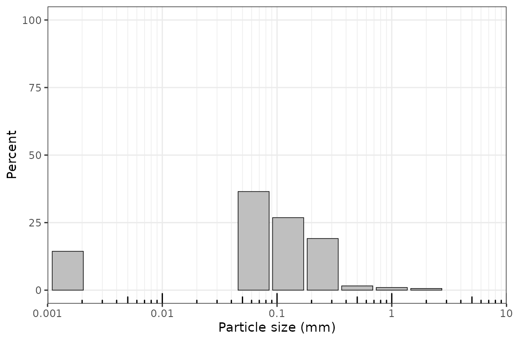
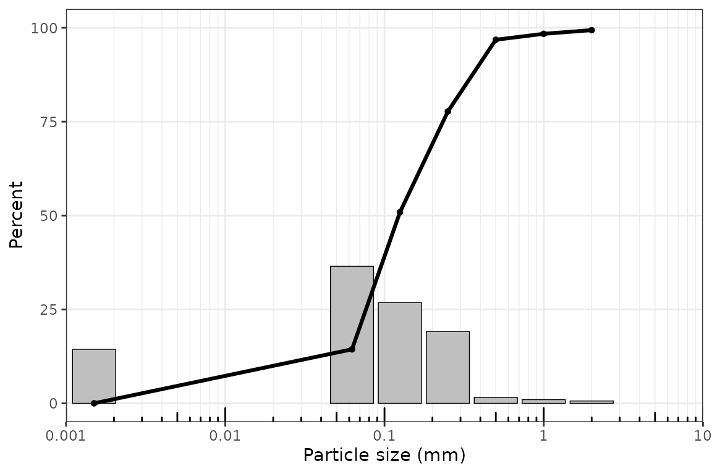
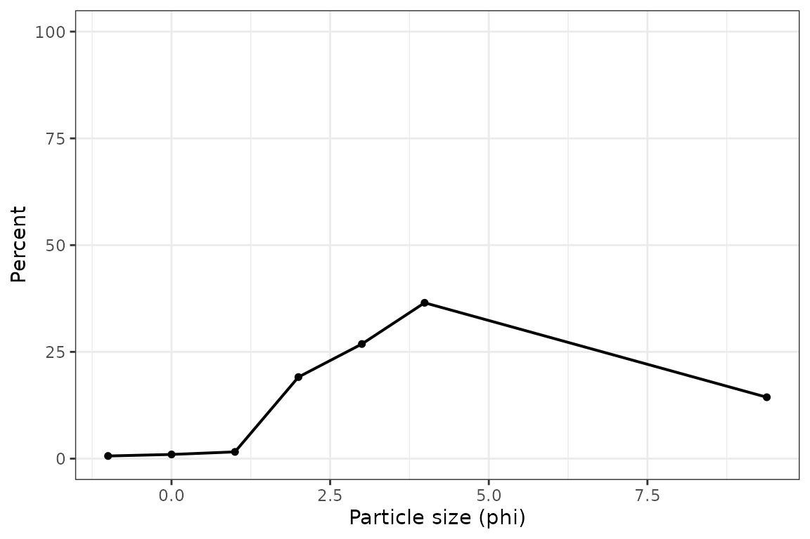
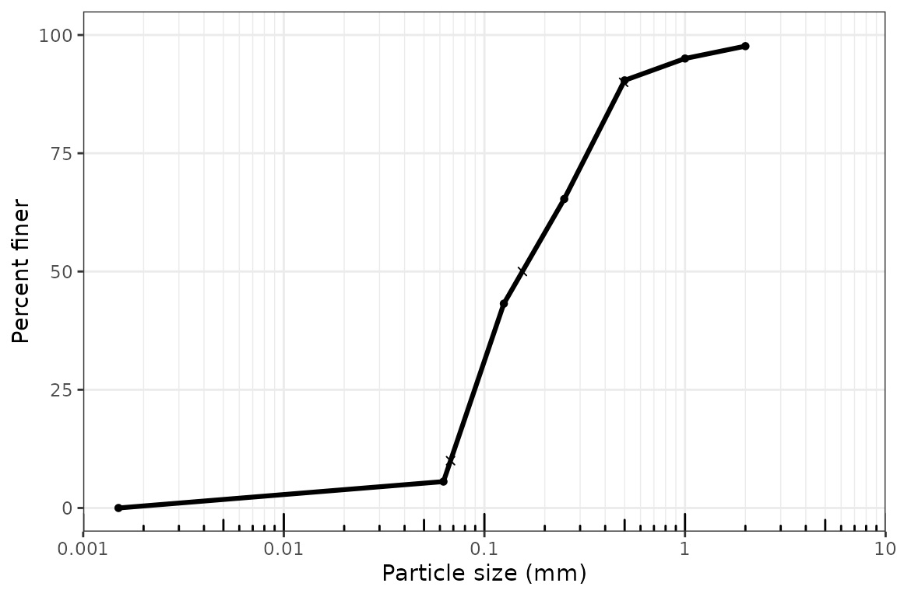
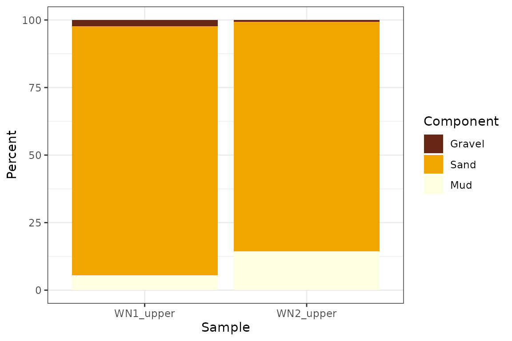

Overview
This vignette walks through a compact, end-to-end grain-size analysis with grainsizeR. It uses the example files installed with the package and keeps each step as an ordinary R object so results can be checked, joined, plotted, and exported with standard R tools.
This vignette calls the primary public functions directly. Short aliases are available for interactive use, but the full function names are easier to read in scripts and reports. CRAN readiness is not claimed here.
Reading Long and Wide Grain-Size Data
Long input has one row per sample and size class. Wide input has one size column and one column per sample.
long_file <- system.file("extdata", "grain.long.csv", package = "grainsizeR")
wide_file <- system.file("extdata", "grain.wide.csv", package = "grainsizeR")
gs <- read_gsd(
long_file,
format = "long",
sample_col = "sample",
size_col = "size",
value_col = "proportion",
size_unit = "mm",
value_type = "proportion"
)
gs_wide <- read_gsd_wide(
wide_file,
size_col = 1,
size_unit = "mm",
value_type = "percent"
)
head(gs)
#> # A tibble: 6 × 13
#> sample_id bin_id raw_size_um size_lower_um size_upper_um size_mid_um
#> <chr> <int> <dbl> <dbl> <dbl> <dbl>
#> 1 S01 1 2000 2000 NA NA
#> 2 S01 2 1000 1000 2000 1414.
#> 3 S01 3 500 500 1000 707.
#> 4 S01 4 250 250 500 354.
#> 5 S01 5 125 125 250 177.
#> 6 S01 6 63 63 125 88.7
#> # ℹ 7 more variables: size_mid_phi <dbl>, retained_percent <dbl>,
#> # cum_finer_percent <dbl>, cum_coarser_percent <dbl>, is_open_lower <lgl>,
#> # is_open_upper <lgl>, measurement_method <chr>Inspecting and Validating gsd_tbl Objects
read_gsd() and read_gsd_wide() return
gsd_tbl objects. Diagnostics help identify open-ended
classes and threshold-resolution limits before running a large
analysis.
is_gsd_tbl(gs)
#> [1] TRUE
head(gs_diagnostics(gs, output = "summary"))
#> # A tibble: 6 × 8
#> sample_id n_ok n_warning n_error n_info has_error has_warning overall_status
#> <chr> <int> <int> <int> <int> <lgl> <lgl> <chr>
#> 1 S01 24 5 0 2 FALSE TRUE warning
#> 2 S02 19 8 0 4 FALSE TRUE warning
#> 3 S03 19 8 0 4 FALSE TRUE warning
#> 4 S04 24 5 0 2 FALSE TRUE warning
#> 5 S05 24 5 0 2 FALSE TRUE warning
#> 6 S06 19 8 0 4 FALSE TRUE warningCumulative Percentages
gs_cumulative() returns finite-boundary cumulative
percentages by sample.
head(gs_cumulative(gs))
#> # A tibble: 6 × 7
#> sample_id boundary_id boundary_um boundary_mm boundary_phi percent_finer
#> <chr> <int> <dbl> <dbl> <dbl> <dbl>
#> 1 S01 1 2000 2 -1 99.4
#> 2 S01 2 1000 1 0 98.4
#> 3 S01 3 500 0.5 1 96.8
#> 4 S01 4 250 0.25 2 77.7
#> 5 S01 5 125 0.125 3 50.9
#> 6 S01 6 63 0.063 3.99 14.4
#> # ℹ 1 more variable: percent_coarser <dbl>D-Values and GRADISTAT-Style D-Spread Descriptors
Use gs_d_values() for requested percentiles and
gs_d_spread() for GRADISTAT-style D-ratio and D-difference
descriptors. Open-ended tails require an explicit extrapolation choice
when a requested value falls outside resolved boundaries.
head(suppressWarnings(gs_d_values(
gs,
probs = c(10, 50, 90),
extrapolate = "warn_linear"
)))
#> # A tibble: 6 × 7
#> sample_id percentile grain_size_um grain_size_mm grain_size_phi
#> <chr> <dbl> <dbl> <dbl> <dbl>
#> 1 S01 10 40.9 0.0409 4.61
#> 2 S01 50 123. 0.123 3.02
#> 3 S01 90 390. 0.390 1.36
#> 4 S02 10 77.6 0.0776 3.69
#> 5 S02 50 175. 0.175 2.51
#> 6 S02 90 412. 0.412 1.28
#> # ℹ 2 more variables: interpolation_scale <chr>, extrapolated <lgl>
head(suppressWarnings(gs_d_spread(
gs,
extrapolate = "warn_linear"
)))
#> # A tibble: 6 × 15
#> sample_id D10 D25 D50 D75 D90 d_value_unit D90_D10_ratio
#> <chr> <dbl> <dbl> <dbl> <dbl> <dbl> <chr> <dbl>
#> 1 S01 40.9 76.9 123. 233. 390. um 9.54
#> 2 S02 77.6 114. 175. 267. 412. um 5.30
#> 3 S03 69.5 91.3 151. 278. 402. um 5.79
#> 4 S04 60.2 81.2 125. 258. 395. um 6.56
#> 5 S05 62.2 80.1 123. 270. 410. um 6.60
#> 6 S06 76.1 104. 216. 346. 439. um 5.77
#> # ℹ 7 more variables: D90_minus_D10 <dbl>, D75_D25_ratio <dbl>,
#> # D75_minus_D25 <dbl>, D90_D10_log_ratio <dbl>, D75_D25_log_ratio <dbl>,
#> # quartile_deviation_phi <dbl>, any_extrapolated <lgl>Folk and Ward Graphical Statistics
gs_folk_ward() calculates graphical statistics from
percentile estimates.
head(suppressWarnings(gs_folk_ward(
gs,
extrapolate = "warn_linear"
)))
#> # A tibble: 6 × 26
#> sample_id D5_um D16_um D25_um D50_um D75_um D84_um D95_um D5_phi D16_phi
#> <chr> <dbl> <dbl> <dbl> <dbl> <dbl> <dbl> <dbl> <dbl> <dbl>
#> 1 S01 25.1 64.9 76.9 123. 233. 314. 468. 5.31 3.94
#> 2 S02 68.2 90.7 114. 175. 267. 346. 476. 3.87 3.46
#> 3 S03 63.5 77.5 91.3 151. 278. 347. 455. 3.98 3.69
#> 4 S04 32.3 69.6 81.2 125. 258. 333. 456. 4.95 3.85
#> 5 S05 35.3 68.7 80.1 123. 270. 347. 472. 4.82 3.86
#> 6 S06 68.5 86.2 104. 216. 346. 399. 475. 3.87 3.54
#> # ℹ 16 more variables: D25_phi <dbl>, D50_phi <dbl>, D75_phi <dbl>,
#> # D84_phi <dbl>, D95_phi <dbl>, mean_fw_phi <dbl>, mean_fw_um <dbl>,
#> # sorting_fw_phi <dbl>, skewness_fw <dbl>, kurtosis_fw <dbl>,
#> # interpolation_scale <chr>, any_extrapolated <lgl>, mean_size_class <chr>,
#> # sorting_class <chr>, skewness_class <chr>, kurtosis_class <chr>Moment Statistics
Moment statistics require explicit open-end handling. This example extends terminal classes by one phi unit.
head(suppressWarnings(gs_moments(
gs,
open_end = "extend_phi"
)))
#> # A tibble: 6 × 14
#> sample_id moment_method mean_moment mean_moment_unit mean_moment_um
#> <chr> <chr> <dbl> <chr> <dbl>
#> 1 S01 logarithmic_phi 2.97 phi 127.
#> 2 S02 logarithmic_phi 2.49 phi 179.
#> 3 S03 logarithmic_phi 2.65 phi 159.
#> 4 S04 logarithmic_phi 2.90 phi 134.
#> 5 S05 logarithmic_phi 2.85 phi 139.
#> 6 S06 logarithmic_phi 2.36 phi 194.
#> # ℹ 9 more variables: mean_moment_phi <dbl>, sd_moment <dbl>,
#> # sd_moment_unit <chr>, skewness_moment <dbl>, kurtosis_moment <dbl>,
#> # retained_percent_used <dbl>, open_end <chr>, open_end_estimated <lgl>,
#> # open_end_omitted <lgl>Modes and Sample Modality
gs_modes() reports ranked retained-class modes and an
operational modality label.
head(gs_modes(gs))
#> # A tibble: 6 × 12
#> sample_id sample_modality mode_rank mode_size_mm mode_size_um mode_phi
#> <chr> <chr> <int> <dbl> <dbl> <dbl>
#> 1 S01 trimodal_or_more 1 0.0887 88.7 3.49
#> 2 S01 trimodal_or_more 2 0.177 177. 2.5
#> 3 S01 trimodal_or_more 3 0.354 354. 1.5
#> 4 S02 unimodal 1 0.177 177. 2.5
#> 5 S02 unimodal 2 0.0887 88.7 3.49
#> 6 S02 unimodal 3 0.354 354. 1.5
#> # ℹ 6 more variables: mode_class_lower_mm <dbl>, mode_class_upper_mm <dbl>,
#> # mode_percent <dbl>, mode_class_label <chr>, is_open_interval <lgl>,
#> # mode_status <chr>Fraction Summaries
Fraction summaries can be returned in long or wide form. The long form is convenient for plotting and joins; the wide form is convenient for reports. The dry-sieve wide example is useful for GRADISTAT-style gravel-sand-mud summaries. The long example includes finer fractions and is used later for USDA texture workflows.
head(gs_fractions(gs, scheme = "wentworth_major"))
#> # A tibble: 6 × 11
#> sample_id scheme component lower_mm upper_mm lower_um upper_um percent
#> <chr> <chr> <chr> <dbl> <dbl> <dbl> <dbl> <dbl>
#> 1 S01 wentworth_maj… gravel 2 Inf 2000 Inf 0.624
#> 2 S01 wentworth_maj… sand 0.0625 2 62.5 2000 85.1
#> 3 S01 wentworth_maj… mud 0 0.0625 0 62.5 14.3
#> 4 S02 wentworth_maj… gravel 2 Inf 2000 Inf 0.224
#> 5 S02 wentworth_maj… sand 0.0625 2 62.5 2000 97.8
#> 6 S02 wentworth_maj… mud 0 0.0625 0 62.5 1.93
#> # ℹ 3 more variables: normalize <chr>, interpolation_scale <chr>,
#> # resolved <lgl>
head(gs_fractions_wide(gs, scheme = "wentworth_major"))
#> # A tibble: 6 × 4
#> sample_id gravel_percent sand_percent mud_percent
#> <chr> <dbl> <dbl> <dbl>
#> 1 S01 0.624 85.1 14.3
#> 2 S02 0.224 97.8 1.93
#> 3 S03 0.312 95.1 4.60
#> 4 S04 0.153 89.7 10.2
#> 5 S05 0.295 89.4 10.4
#> 6 S06 0.230 98.8 0.964
head(gs_fractions_wide(gs_wide, scheme = "gravel_sand_mud"))
#> # A tibble: 6 × 4
#> sample_id gravel_percent sand_percent mud_percent
#> <chr> <dbl> <dbl> <dbl>
#> 1 S01 0.624 85.0 14.4
#> 2 S02 0.224 97.8 1.93
#> 3 S03 0.312 95.1 4.60
#> 4 S04 0.153 89.6 10.2
#> 5 S05 0.295 88.8 10.9
#> 6 S06 0.230 98.8 0.964Descriptive Terms
gs_describe_parameters() adds GRADISTAT-style printout
descriptors for calculated Folk and Ward or moment statistics.
head(suppressWarnings(gs_describe_parameters(gs)))
#> # A tibble: 6 × 19
#> sample_id bin_id raw_size_um size_lower_um size_upper_um size_mid_um
#> <chr> <int> <dbl> <dbl> <dbl> <dbl>
#> 1 S01 1 2000 2000 NA NA
#> 2 S01 2 1000 1000 2000 1414.
#> 3 S01 3 500 500 1000 707.
#> 4 S01 4 250 250 500 354.
#> 5 S01 5 125 125 250 177.
#> 6 S01 6 63 63 125 88.7
#> # ℹ 13 more variables: size_mid_phi <dbl>, retained_percent <dbl>,
#> # cum_finer_percent <dbl>, cum_coarser_percent <dbl>, is_open_lower <lgl>,
#> # is_open_upper <lgl>, measurement_method <chr>, mean_description <chr>,
#> # sorting_description <chr>, skewness_description <chr>,
#> # kurtosis_description <chr>, description_method <chr>,
#> # description_status <chr>Quality Flags
gs_quality_flags() records advisory flags for supplied
sediment loss and open-ended fine pan fractions.
head(gs_quality_flags(
gs,
sediment_loss_percent = c(S01 = 1.5, S02 = 2.5)
))
#> # A tibble: 6 × 6
#> sample_id quality_flag quality_status quality_value quality_threshold
#> <chr> <chr> <chr> <chr> <chr>
#> 1 S01 sediment_loss ok 1.5 <= 2%
#> 2 S01 open_fine_tail needs_additional_… TRUE reported explici…
#> 3 S01 fine_pan_fraction needs_additional_… 2.9952675 1% info; 5% warn…
#> 4 S02 sediment_loss warning 2.5 > 2%
#> 5 S02 open_fine_tail needs_additional_… TRUE reported explici…
#> 6 S02 fine_pan_fraction needs_additional_… 1.9336191 1% info; 5% warn…
#> # ℹ 1 more variable: quality_message <chr>Distribution Plots
plot_distribution() returns a ggplot object and supports
metric and phi axis scales. The same function can overlay cumulative
percent finer on the retained size-class bars for a GRADISTAT-style
combined display. The examples below use the dry-sieve wide dataset so
the plotted samples align with the README GRADISTAT-style showcase.
Metric displays use particle size in millimetres on a log-scaled x-axis
by default, with major breaks at 0.001, 0.01, 0.1, 1, and 10 mm.
Distribution bars are centered at particle-size classes. Use
particle_unit = "um" for micrometre axes. Distribution and
cumulative plots show one sample at a time; loop over samples or arrange
returned plots externally for multi-sample figures. Lower open-ended
classes are displayed at 0.0015 mm, or 1.5 um, for plotting only;
calculations are unchanged.
plot_distribution(gs_wide, sample = "S01")
plot_distribution(gs_wide, sample = "S01", cumulative = TRUE)
plot_distribution(gs_wide, x_scale = "phi", type = "line", sample = "S01")
Cumulative Plots
plot_cumulative() uses the same particle-size x-axis
conventions and can also add D-value markers.
suppressWarnings(plot_cumulative(
gs_wide,
sample_id = "S01",
show_percentiles = c(10, 50, 90),
extrapolate = "warn_linear"
))
Fraction Plots
plot_fractions() draws size-class percentage bars. For
dry-sieve GRADISTAT-style examples, use non-overlapping
Gravel, Sand, and Mud fractions.
More detailed Wentworth-style classes are available with
scheme = "wentworth_detailed" when the input resolves those
boundaries.
plot_fractions(
gs_wide,
scheme = "gravel_sand_mud",
sample_id = c("S01", "S02"),
fill_palette = "YlOrBr"
)
Building a Combined Analysis Table
gs_parameters() collects common outputs into a single
table. More specialized helpers remain available when you need a
narrower result.
combined <- suppressWarnings(gs_parameters(
gs,
parameters = c("d_values", "d_spread", "folk_ward", "modes", "descriptors", "quality"),
d_values = c(10, 50, 90),
extrapolate = "warn_linear",
moments_open_end = "extend_phi"
))
head(combined)
#> # A tibble: 6 × 82
#> sample_id D10_um D50_um D90_um D10 D25 D50 D75 D90 d_value_unit
#> <chr> <dbl> <dbl> <dbl> <dbl> <dbl> <dbl> <dbl> <dbl> <chr>
#> 1 S01 40.9 123. 390. 40.9 76.9 123. 233. 390. um
#> 2 S02 77.6 175. 412. 77.6 114. 175. 267. 412. um
#> 3 S03 69.5 151. 402. 69.5 91.3 151. 278. 402. um
#> 4 S04 60.2 125. 395. 60.2 81.2 125. 258. 395. um
#> 5 S05 62.2 123. 410. 62.2 80.1 123. 270. 410. um
#> 6 S06 76.1 216. 439. 76.1 104. 216. 346. 439. um
#> # ℹ 72 more variables: D90_D10_ratio <dbl>, D90_minus_D10 <dbl>,
#> # D75_D25_ratio <dbl>, D75_minus_D25 <dbl>, D90_D10_log_ratio <dbl>,
#> # D75_D25_log_ratio <dbl>, quartile_deviation_phi <dbl>,
#> # any_extrapolated <lgl>, D5_um <dbl>, D16_um <dbl>, D25_um <dbl>,
#> # D75_um <dbl>, D84_um <dbl>, D95_um <dbl>, D5_phi <dbl>, D16_phi <dbl>,
#> # D25_phi <dbl>, D50_phi <dbl>, D75_phi <dbl>, D84_phi <dbl>, D95_phi <dbl>,
#> # mean_fw_phi <dbl>, mean_fw_um <dbl>, sorting_fw_phi <dbl>, …Notes on Open-Ended Tails and Extrapolation
Open-ended terminal classes are common in sediment data. grainsizeR does not silently turn them into closed intervals. Functions that need unresolved thresholds require an explicit extrapolation or open-end option, which makes the assumption visible in the analysis script.